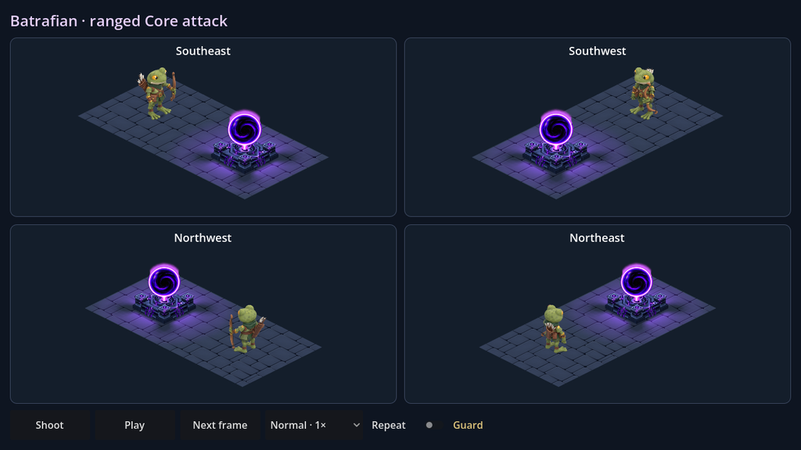
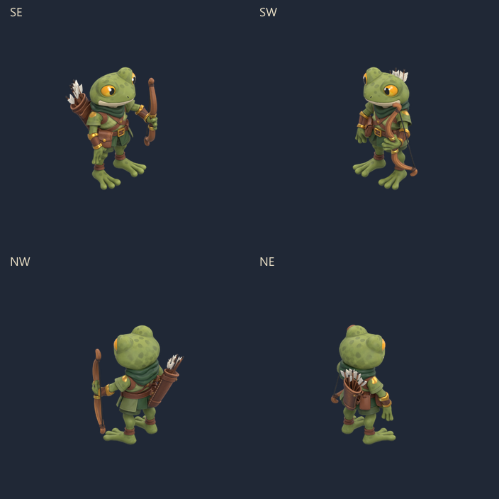
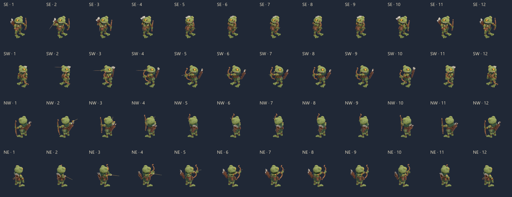

Batrafian · tir à l’arc sur le cœur
La flèche sort du carquois, rejoint la corde, puis part vers le vortex. Le Batrafian reste à distance ; le cœur réagit à l’arrivée de la pointe.
4 directions réelles12 poses · 1,15 secondeModèle et textures Meshy conservés

Capture de la scène native. Lâcher à 690ms, vol de 260ms, impact à 950ms. Une pause de 800ms sépare les répétitions de cet aperçu.
Le geste en détail

Visée et poses
La flèche reste dans la main pendant l’alignement, puis s’encoche lorsque la main peut atteindre la corde. La corde peinte du modèle est déformée avec l’arc, sans ajouter de seconde corde.

Tester dans Godot
Ouvrir BatrafianCoreAttack.tscn, puis lancer la scène avec F6. Commandes : Shoot, Pause, Next frame, vitesse de ×0,5 à ×2 et Repeat.
Scène de validation autonome : le tir n’est pas encore connecté aux raids. Les effets d’impact ne modifient pas la simulation. Aucun APK ni sauvegarde joueur.
475 contrôles natifs réussis sur trois tailles de fenêtre. Sources, réglages, étapes et limites : recette de reproduction. Modèle Blender avec les poses.